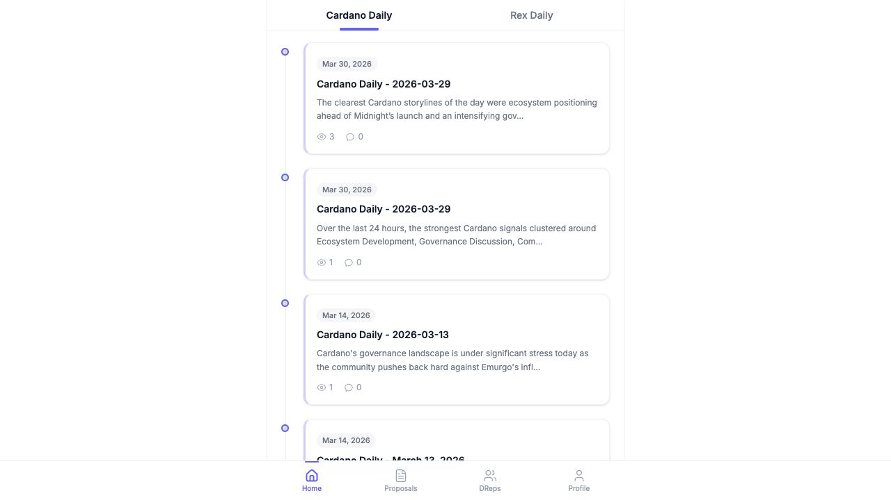
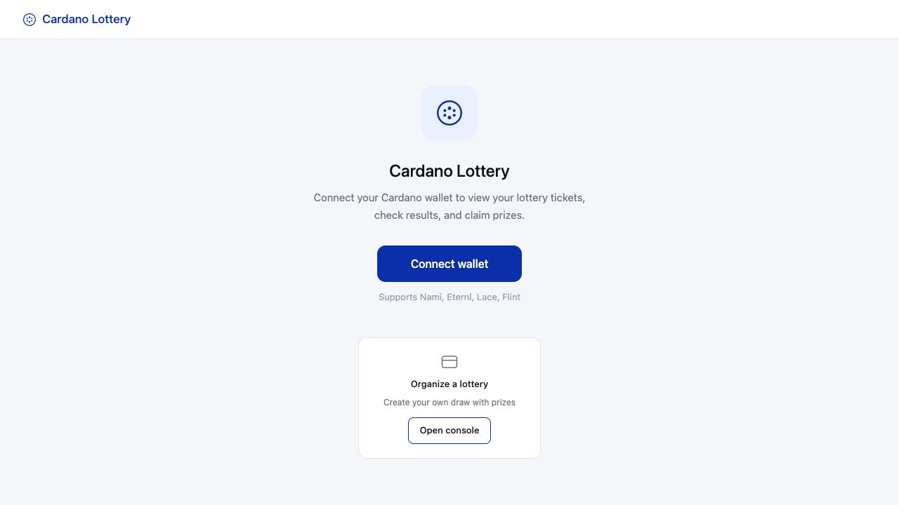

01voda
AI 编辑每日精选 Cardano 动态。
 02
02ouro-pass
基于 Cardano 的去中心化身份与订阅基础设施。
 03
03utxray
面向 Cardano 智能合约的 Agent-First 调试与质量检测工具。
 04
04ouro-ops
面向 AI Agent 的 Cardano Stake Pool 运维工具。

05lottery
基于 Cardano 构建的去中心化彩票应用。

软件订阅正在失效，创作者经济需要新的基础设施
02区块链的“组合性”演进：为什么 AI 时代需要的是 Cardano 而非 Ethereum？
03Immutable Spec：让需求、设计、执行和验收收敛到同一份文档
04从认知到行动的健康长寿实践
03
P · A · O
主线
P // POOL
运营 Cardano 矿池
矿池收入用于支付节点、服务器、AI 服务和产品开发。委托 ADA 即成为会员。
A // AI
构建 AI 产品
Coil 是你桌面上的交易 Agent；VODA 由 AI 编辑每天挑选 Cardano 动态。
O // OPEN
开源与公开写作
Ouro Pass、utxray、ouro-ops 在 GitHub 开源，并持续分享运营实践。
04
ON-CHAIN MEMBERS
成员
#01stake1u8kl…xe93nu₳ 889.69since epoch 586
#02stake1uxxv…tsgyv₳ 517.43since epoch 524 · operator pledge
#03stake1uxre…63gmlc₳ 104.83since epoch 650
#04stake1u96q…zecc8g₳ 27.65since epoch 604
#05你的 stake address下一位就是你委托给 PAO →